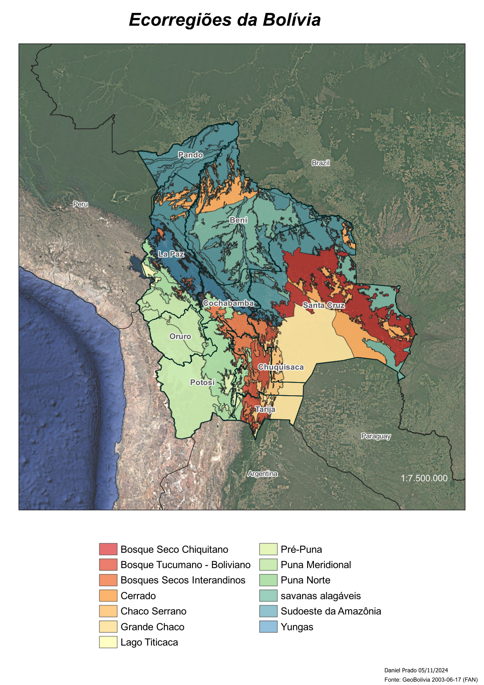

| ste mapa detalha as ecorregiões da Bolívia, ilustrando a extraordinária diversidade biológica e ecológica do país. Ele permite identificar como diferentes áreas estão organizadas com base em suas características naturais, como tipos de vegetação, fauna predominante e condições ambientais, refletindo as dinâmicas ecológicas que moldam cada região. A Bolívia apresenta uma impressionante variedade de ambientes, que vão desde as florestas secas e savanas até as altitudes extremas dos Andes, além das transições para a exuberante Amazônia. Essas ecorregiões representam padrões únicos de biodiversidade e uso do solo, oferecendo uma base valiosa para compreender as interações ecológicas, assim como os desafios e oportunidades associados à conservação e ao uso sustentável desses recursos. Os dados que fundamentaram este mapa foram retirados do portal oficial GeoBolivia, com complementações fornecidas pela Fundación Amigos de la Naturaleza (FAN). Essas fontes são fundamentais para apoiar iniciativas de conservação e planejamento territorial, permitindo uma visão integrada e estratégica sobre a rica diversidade ecológica boliviana. |  |